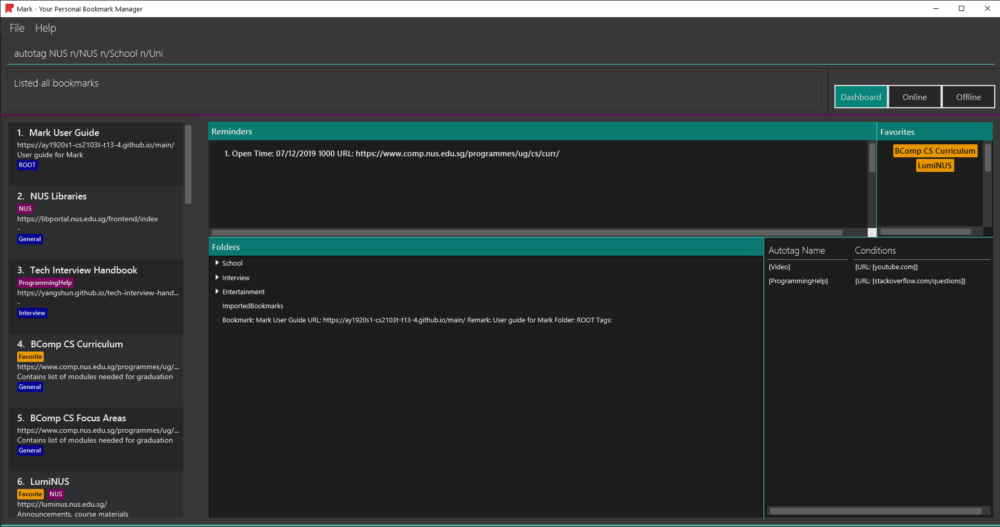
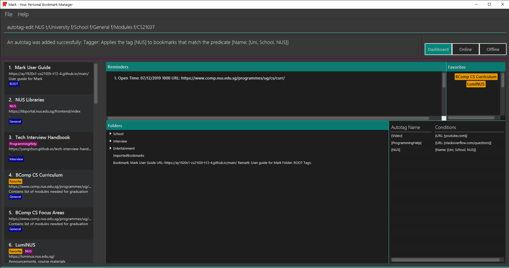
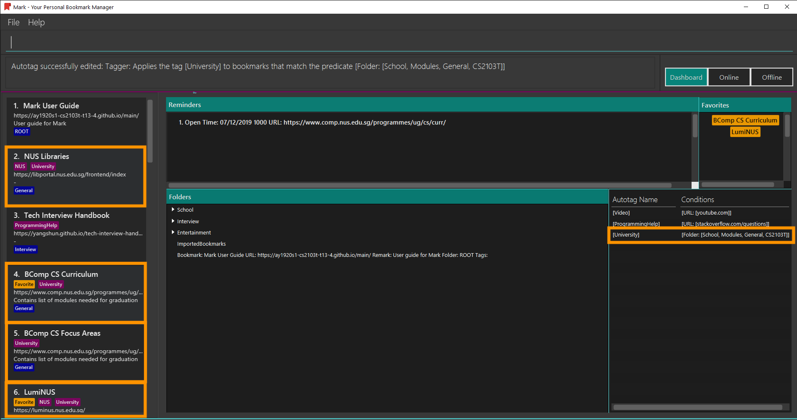
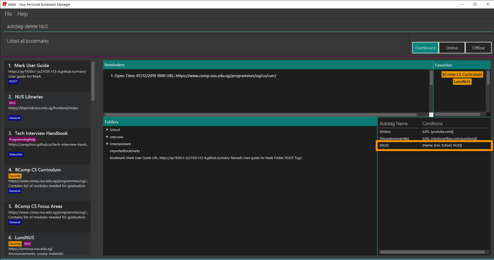

PROJECT: Mark (Bookmark Manager)
1. Overview
My team of 5 software engineering students was tasked with morphing an existing Command Line Interface (CLI) desktop application into a useful application for a specific target group. We chose to create a bookmark manager application known as Mark, which is intended to help computing students manage their web browsing activities. Mark was conceptualised and implemented over a period of 8 weeks.
This is what Mark looks like:

My role as a developer was to design and implement a mechanism to allow bookmarks to be categorised automatically. I also improved Mark’s storage functionality and contributed to various team tasks. The following sections describe these contributions in more detail.
2. Summary of contributions
This section summarizes my code, documentation, and team-related contributions to Mark.
Major feature: I implemented the autotag mechanism to facilitate the automatic categorisation of bookmarks.
-
What it does: Allows bookmarks to be tagged automatically based on a predefined set of conditions.
-
Justification: Organising bookmarks is time-consuming as bookmarks must be edited individually. This enhancement allows users to categorise their bookmarks without additional effort.
-
Highlights: Designing the autotag mechanism required significant planning to conceptualize how abstract autotag conditions should be stored. In addition, this feature involved development in all major components of Mark.
Minor feature: I enhanced Mark’s existing storage system by adding the capacity to export and import bookmarks. It allows users to save and retrieve bookmarks from different files on the hard disk without exiting Mark, so that they can preserve old bookmarks without cluttering their current dashboard.
Code contributed: Click here to see the code and documentation that I contributed to Mark.
Other contributions
-
Project management: I facilitated weekly team meetings to discuss the team’s progress and managed release
v1.2.1on GitHub. -
Enhancements to existing features and code-related contributions: I migrated the code from AddressBook Level 3 to Mark (#14, #62), created a custom URL validation to be used when no Internet connection is available (#14, #117), and updated the list of sample data used when Mark is first opened (#227).
-
Documentation: I improved the layout and organisation of the User Guide (#248, #254) as well as documented the design of the Model component in the Developer Guide (#129, #264).
-
Community: I reviewed team members' Pull Requests and offered suggestions to increase the clarity of messages and improve code quality (#74, #119, #122).
3. Contributions to the User Guide
Given below is a sample section that I contributed to the User Guide. It showcases my ability to write documentation targeting end-users. |
<Start of excerpt from Mark User Guide>
3.1. Autotags
Autotags are tags that will be automatically applied to bookmarks that match their autotag conditions. You can view the details of existing autotags in the autotag panel at the bottom-right of the Dashboard tab, as seen below.
3.1.1. Creating an automatic tag: autotag
If you want to tag a group of similar bookmarks without manually editing each one, you
can use the autotag command to create an autotag to do it for you.
You will need to define conditions that describe the key characteristics of the bookmarks to be tagged.
| Conditions fall into two categories: normal conditions, which are characteristics that bookmarks to be tagged should match, and not-conditions, which are conditions that bookmarks should not match. |
You can specify conditions relating to the name, URL, and/or folder (also known as attributes) of a bookmark. It is also possible not to specify any condition for an attribute if the attribute is not relevant. However, an autotag must have at least one condition specified; otherwise, it would automatically tag all your bookmarks!
Format: autotag TAG_NAME [n/NAME_KEYWORD]… [u/URL_KEYWORD]… [f/FOLDER]…
[nn/NOT_NAME_KEYWORD]… [nu/NOT_URL_KEYWORD]… [nf/NOT_FOLDER]…
For example:
-
To add a new autotag, input
autotag NUS n/NUS n/School n/Uniinto the command box. -
You can then check that an autotag named
NUSwith three name conditions (NUS,School, andUni) has been added to the autotag panel of the Dashboard. Also, notice that bookmarks with names that containNUS,SchoolorUninow have the tagNUS.
There are several restrictions on the usage of command parameters:
If an autotag’s conditions contradict each other, no bookmarks will be tagged.
E.g. an autotag with conditions u/github.com/mark nu/github.com/ will do nothing as no
bookmark can have a URL containing github.com/mark and not github.com.
|
|
If multiple conditions are specified, bookmarks that meet the following requirements will be matched:
|
Other examples:
-
autotag LumiNUS u/luminus.nus.edu.sg nf/Miscellaneous
Creates an autotag named
LumiNUSwhich tags all bookmarks with URLs containingluminus.nus.edu.sgthat are not in the folderMiscellaneous. -
autotag Quiz f/NUS f/Module nu/github nu/stackoverflow
Creates an autotag named
Quizwhich tags all bookmarks that are either in the folderNUSor in the folderModule, and that do not contain the keywordsgithuborstackoverflowin their URLs.
3.1.2. Editing an automatic tag: autotag-edit
If you want to modify an autotag, you can use the autotag-edit command to edit the autotag’s
name and/or conditions.
This is essentially a shortcut for autotag-delete followed by autotag-add.
|
Format: autotag-edit TAG_NAME [t/NEW_TAG_NAME] [n/NAME_KEYWORD]… [u/URL_KEYWORD]… [f/FOLDER]…
[nn/NOT_NAME_KEYWORD]… [nu/NOT_URL_KEYWORD]… [nf/NOT_FOLDER]…
For example:
-
To modify an autotag named
NUS, typeautotag-edit NUS t/University f/School f/General f/Modules f/CS2103T -
You can then observe that the autotag
NUShas been renamedUniversity, and its folder conditions now include the folderCS2103T.
The parameter constraints are similar to the autotag command’s,
with the following differences:
Other examples:
-
autotag-edit Quiz u/luminus.nus.edu.sg u/quiz nu/attemptModifies the autotag
Quizsuch that it tags bookmarks with URLs that contain either of the keywordsluminus.nus.edu.sgorquiz, but do not contain the keywordattempt. -
autotag-edit Quiz t/QuizzesModifies the name of the autotag
Quizsuch that it now tags bookmarks with the tagQuizzesinstead ofQuiz.
3.1.3. Deleting an automatic tag: autotag-delete
If you no longer need an autotag, you can delete it from Mark using the autotag-delete
command. None of your existing tags will be affected.
Format: autotag-delete TAG_NAME
For example:
-
To delete the autotag
NUS, inputautotag-delete NUSinto the command box. -
You can then check that the autotag named
NUShas been deleted from the autotag panel of the Dashboard. In addition, no bookmarks have been modified.
Parameter constraints:
<End of excerpt from Mark User Guide>
4. Contributions to the Developer Guide
Given below is a sample section that I contributed to the Developer Guide. It showcases my ability to write technical documentation and the technical depth of my contributions to the project. |
<Start of excerpt from Mark Developer Guide>
4.1. Autotag feature
4.1.1. Implementation
Autotags, autotag names, and autotag conditions are represented as SelectiveBookmarkTaggers,
Tags and BookmarkPredicates in the Model respectively. The class diagram for the Autotag package illustrates the
structure of these classes:
The BookmarkPredicate class keeps track of multiple types of autotag conditions.
To do so, it maintains separate sets of keywords for each condition category; for instance, name keywords are stored
separately from not-URL keywords.
It also contains a single predicate to test whether a bookmark matches the given conditions.
Other classes in the Predicates package (those with names XYZContainsKeywordsPredicate)
are used to generate this predicate from the keyword sets.
| You can refer to the Autotags section of the User Guide for details of autotag conditions. |
The autotag mechanism itself is facilitated by the main class AutotagController, which stores and manages the list of
SelectiveBookmarkTaggers.
The AutotagController implements several operations to add, remove, and apply taggers, as well as to check
whether a given tagger exists. Four of these operations can be accessed via the Model interface:
hasTagger(SelectiveBookmarkTagger), addTagger(SelectiveBookmarkTagger), removeTagger(String),
and applyAllTaggers(). These Model operations allow autotags to be added, edited, or removed by commands
in the Logic component.
Given below is an example usage scenario that shows the autotag mechanism at each step.
Step 1. The user opens the application with an existing list of bookmarks and no autotags.

Step 2. The user executes the command autotag Help u/stackoverflow.com/questions to add an autotag that tags all
bookmarks from stackoverflow.com/questions with the tag Help.
-
A
SelectiveBookmarkTaggeris created with aBookmarkPredicateand aTagnamed Help. The predicate’s URL keyword is stackoverflow.com/questions. Bookmarkb2, which matches the predicate’s conditions, is replaced by a copy of itself (b3) that contains the additional tag Help.

Step 3. The user then executes the command add n/JavaFX new scene u/https://stackoverflow.com/questions/29080759/
to bookmark a question on StackOverflow.
-
A new bookmark with the name
JavaFX new sceneis created. This bookmark matches the conditions for the autotag Help, so it is tagged Help.
The next three diagrams show how the autotag command works in more detail.
An autotag command is parsed using an AutotagCommandParser in a similar fashion as
other commands, resulting in an AutotagCommand that contains the SelectiveBookmarkTagger to be added.
The following diagram illustrates the sequence of operations that occur when
a valid autotag command is executed:

AutotagCommandThe AutotagCommand first checks whether the given model contains the tagger to be added.
Since it does not (the autotag command is valid), the tagger is added and all taggers are applied to
the bookmarks in model.
The current state of Mark is then saved.
The next sequence diagram provides details of how taggers are applied to bookmarks in Mark.

Model#applyAllTaggers()| The sd frame should cover the whole diagram, but it does not due to a limitation of PlantUML. |
As seen above, the Model calls VersionedMark, which obtains its list of bookmarks
and passes the list to AutotagController.
AutotagController then iterates through the bookmarks and taggers, applying tags to bookmarks by using
SelectiveBookmarkTagger#applyTagSelectively(Bookmark). A new list of bookmarks is returned, which is set as the new
bookmark list.
The activity diagram below summarizes what happens when a valid autotag is added. The mechanism for tagging bookmarks when a bookmark is added or modified is similar.

4.1.2. Design Considerations
This section explains the key reasons why certain implementations were selected over others when designing the autotag mechanism.
Aspect: How to tag bookmarks based on specific conditions
-
Alternative 1: Implement all the logic in a single class, which first checks whether a bookmark matches its conditions, then tags the bookmark if it does.
-
Pros: Simpler to implement.
-
Cons: Violates the Single Responsiblity Principle.
-
-
Alternative 2 (current choice): Separate the checking and tagging mechanisms into two classes. One class implements the tagging, while the second class inherits that functionality and implements an additional check before tagging.
-
Pros: Allows the 'tagger' class to be re-used elsewhere.
-
Cons: Increases coupling between the two classes.
-
Aspect: How to apply taggers to a bookmark list in Mark
-
Alternative 1 (current choice): Replace the whole bookmark list with a new list of bookmarks, some of which have been tagged.
-
Pros: Simple to implement, maintains immutability of bookmarks.
-
Cons: Inefficient to construct a new list each time a single bookmark is tagged.
-
-
Alternative 2: Modify individual bookmarks when adding tags.
-
Pros: Eliminates the need to reset Mark’s bookmark list whenever taggers are applied.
-
Cons: Can cause unanticipated changes in other parts of the Model as bookmarks are modified.
-
-
Alternative 3: Replace only those bookmarks that were tagged.
-
Pros: Minimises performance issues from creating a new bookmark list.
-
Cons: More complicated to implement.
-
<End of excerpt from Mark Developer Guide>